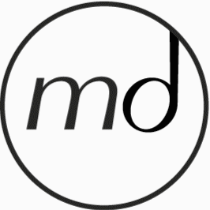
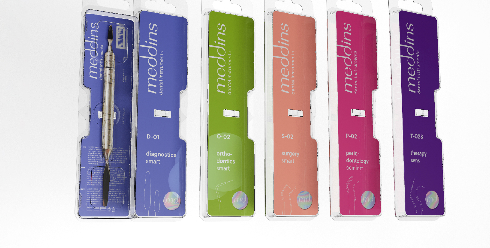

<main>
    <div class="container">
        <span class="span-setka-1"></span>
        <span class="span-setka-center"></span>
        <span class="span-setka-2"></span>
        <div class="acc-list-fix-wrp">
            <ul class="acc-list-fix">
                <li>
                    <a href="#">
                        
                        <span>facebook</span>
                    </a>
                </li>
                <li>
                    <a href="#">
                        
                        <span>instagram</span>
                    </a>
                </li>
            </ul>
        </div>
        <div class="page-content about-page-content">
            <div class="p56">
                <ul class="breadcrumbs-list">
                    <li>
                        <a href="/">
                            
                        </a>
                    </li>
                    <li>
                        <a href="#">Блог</a>
                    </li>
                    <li>
                        <a href="#">Очень тонкая гладилка для моделирования</a>
                    </li>
                </ul>
                <h2 class="wow animated fadeInUp">О компании</h2>
                <div class="row vrezka-row">
                    <div class="col-md-8 col-12">
                        <p class="wow fadeInUp animated">Meddins – український виробник стоматологічного інструменту з&nbsp;високоякісної медичної сталі. Це порівняно молодий бренд, що&nbsp;стрімко розвивається та тісно співпрацює зі стоматологами і&nbsp;експертами медичної галузі.</p>
                    </div>
                    <div class="col-md-4 col-12">
                        
                    </div>
                </div>
                <div class="row">
                    <div class="offset-lg-3 offset-md-1 col-lg-6 col-md-10 col-12">
                        <div class="article-about">
                            <article>
                                
                                <p></p>
                                <p></p>
                                <p></p>
                                <p><b>Хто нас обирає?</b></p>
                                <p>Активні, прогресивні стоматологи, які обожнюють професію та постійно розвиваються в ній. Лікарі з різним досвідом роботи.</p>
                                <br>
                                <p><b>Чому нас обирають?</b></p>
                                <p>Без якісного професійного інструменту неможливо провести навіть стоматологічний огляд. Це гарантія безпечної, акуратної роботи, це показник кваліфікації лікаря та його відповідального ставлення до пацієнта. Meddins – перший український виробник стоматологічного інструменту. Продукцію Meddins відзначили сотні стоматологів із фокус-групи: ми створюємо інструмент тільки разом із вами.</p>
                                <br>
                                <p><b>Що є в асортименті?</b></p>
                                <p>Наразі асортимент Meddins представлений інструментами для стоматологічного обстеження та діагностики (дзеркало, лопатки, пінцети). У майбутньому відбудеться запуск лінійок для інших галузей: хірургії, терапії, ортодонтії, пародонтології, ортопедії та естетичної стоматології.</p>
                                <br>
                                <p><b>Як придбати інструмент?</b></p>
                                <p>Заповнити форму на нашому сайті – консультанти Meddins зв’яжуться з вами і допоможуть зробити замовлення.</p>
                            </article>
                        </div>
                    </div>
                </div>
                <div class="row row-abzac">
                    <div class="col-lg-5 col-md-6 col-12">
                        <div class="article-about">
                            <article>
                                <h1>Наші принципи</h1>
                                <p></p>
                                <p></p>
                                <p>Основними принципами Meddins є: якість, доступність, швидкість, народність та перспективність.</p>
                            </article>
                        </div>
                    </div>
                    <div class="offset-lg-1 offset-0 col-md-6 col-12">
                        <div class="article-about">
                            <article>
                                <p><b>Якість</b></p>
                                <p>Стоматологічні інструменти Meddins виготовлені з високоякісної медичної сталі. Це міцний метал, який здатен витримати високі температури та сильне навантаження (стійкий до корозії).</p>
                                <p>80% виробництва стоматологічного інструменту – це ручна робота, адже жоден автоматизований процес не в змозі досягнути такого акуратного та якісного результату, як при індивідуальному підході. Наш персонал вручну відливає, обробляє і заточує кожен інструмент.</p>
                                <p>Простий, ергономічний і функціональний – таким має бути професійний інструмент для стоматологів. З його допомогою робити процедурні маніпуляції стане швидше та зручніше. Meddins дбає про ваше здоров&#39;я, тому робить конструкцію інструмента максимально ергономічною, аби при тривалому користуванні не перевантажувати кисть і не відчувати біль у руці.</p>
                                <br>
                                <p><b>Швидкість</b></p>
                                <p>Відтепер вам не доведеться замовляти імпортний інструмент та довго чекати на нього. Meddins виготовляє інструмент в Україні на власному заводі, тож придбати його у будь-якому українському місті не стане проблемою.</p>
                                <p>Також Meddins подбав про логістику і швидкість доставки. Відтепер можна легко замовити і швидко отримати інструмент, аби відразу використовувати його.</p>
                                <br>
                                <p><b>Доступність</b></p>
                                <p>У нас, як професіоналів своєї справи, є глобальна мета: вивести українську стоматологію на світовий рівень і полегшити роботу кожному лікареві. Саме тому висока якість продукції не вплинула на її ціну – вона залишається доступною для кожного стоматолога країни, від студента-інтерна до досвідченого професіонала. </p>
                                <p>Ми впевнені: в усіх стоматологічних клініках та медичних закладах має бути якісний інструмент для успішних результатів лікування.</p>
                            </article>
                        </div>
                    </div>
                </div>
                <div class="row">
                    <div class="col-md-6 col-12">
                        <div class="article-about">
                            <article>
                                <p><b>Народність</b></p>
                                <p>Meddins створює інструменти разом з вами – практикуючими стоматологами, експертами в галузі медицини та охорони здоров’я, лідерами думок. Наші технологи прислухаються до кожного відгуку, відкриті до пропозицій, враховують всі нюанси для того, щоб кожен стоматолог відчував свою значущість і причетність до такої складної та важливої професії.</p>
                                <p>Інструмент – ваш помічник. Це гарантія комфортної роботи, безпеки та досконалого результату.</p>
                                <p>Всі разом ми створюємо такий інструмент, аби досягти успіху в лікуванні будь-яких стоматологічних випадків.</p>
                                <br>
                                <p><b>Перспективність</b></p>
                                <p>Meddins тільки з’явився на українському ринку. Це величезний прорив та радість – нарешті в Україні виробляється власний стоматологічний інструмент! Але разом із тим, у нас попереду багато роботи.</p>
                                <p>Поки в нашому асортименті є тільки інструмент для стоматологічного обстеження та діагностики (дзеркало, лопатки, пінцети). Планується запуск лінійок інструменту для галузей хірургії, терапії, ортодонтії, пародонтології, ортопедії та естетичної стоматології.</p>
                                <p>Ми плануємо представляти свій інструмент як солідний аналог імпортних, який не програє в якості, однак продається за меншу ціну.</p>
                            </article>
                        </div>
                    </div>
                </div>
            </div>
        </div>
    </div>
</main>
